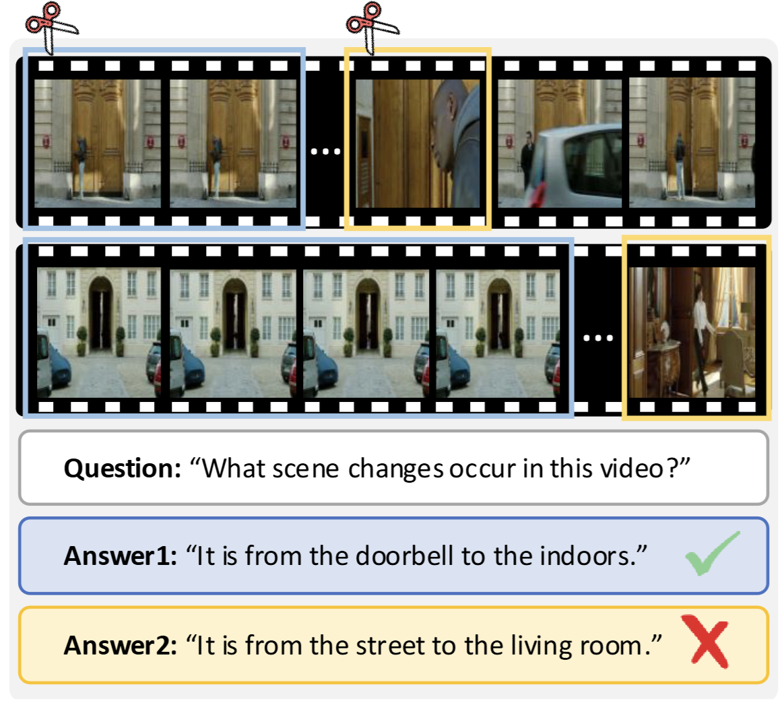
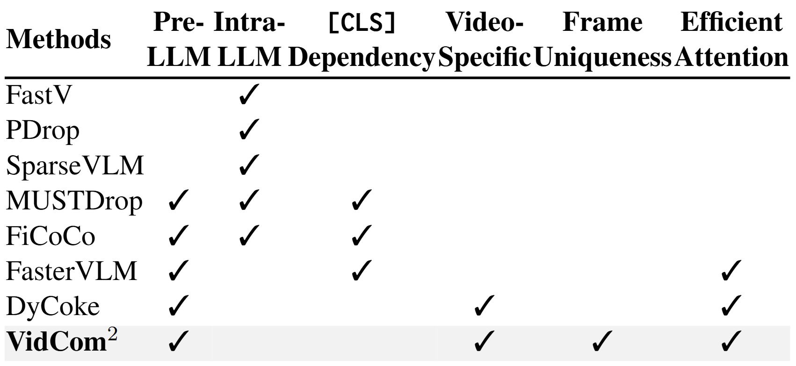
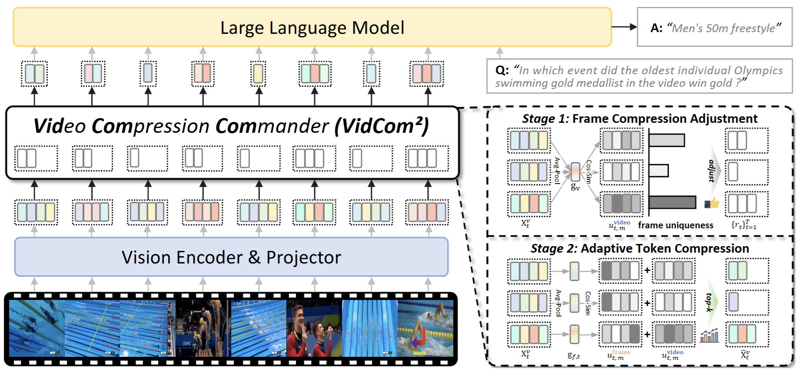
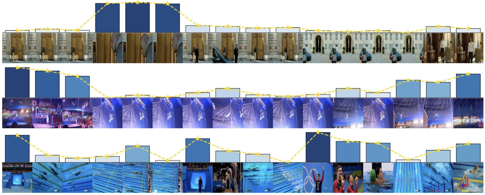

Contributions
(1) Empirical Method Analysis: We critically analyze existing token compression methods, unveiling their inherent limitations and delineating three key design principles for effective and efficient VideoLLM token compression.
(2) Video Compression Commander: We are the first to propose a VideoLLM token compression framework based on frame uniqueness, offering a plug-and-play method with frame-wise dynamic compression.
(3) Outstanding Performance & Efficiency: Extensive experiments on diverse benchmarks demonstrate superior efficiency-performance trade-offs. With 15% tokens, VidCom2 outperforms the second-best method by 3.9% and 2.2% on LLaVA-OV and LLaVA-Video.
Motivation


Existing token compression methods for VideoLLMs suffer from two critical issues: (I) Design Myopia—they ignore frame importance, so dropping redundant vs. unique frames affects performance very differently; (II) Implementation Constraints—some depend on CLS attention or explicit LLM-layer attention, conflicting with efficient operators.
We summarize existing works and identify three key principles for designing effective and efficient token compression methods for VideoLLM: (i) Model Adaptability: The method should be easily compatible with and adaptable to the majority of existing VideoLLMs; (ii) Frame Uniqueness: The method should consider varying distinctiveness across video frames; (iii) Operator Compatibility: The method should maintain compatibility with efficient operators.
Video Compression Commander: VidCom2
We present VidCom2, a plug-and-play framework that dynamically compresses video tokens based on frame uniqueness, achieving state-of-the-art efficiency and performance across various VideoLLMs and benchmarks.

Overall framework of VidCom2. Our VidCom2 performs plug-and-play token compression in two stages: (i) Frame Compression Adjustment: adjusts compression intensity based on frame uniqueness, (ii) Adaptive Token Compression: preserves tokens based on their within-frame and cross-video uniqueness.

Visualization of frame uniqueness quantified by our VidCom2. Taller and darker bars indicate frame uniqueness, where VidCom2 allocates more tokens to unique frames to preserve critical visual information.
Experimental Results
| Methods | MVBench | LongVideoBench | MLVU | VideoMME | Average (%) | |||
|---|---|---|---|---|---|---|---|---|
| Overall | Short | Medium | Long | |||||
| Upper Bound | ||||||||
| LLaVA-OV-7B | 56.9 | 56.4 | 63.0 | 58.6 | 70.3 | 56.6 | 48.8 | 100.0 |
| Retention Ratio=30% | ||||||||
| DyCoke [CVPR'25] | 56.6 | 54.7 | 60.3 | 56.1 | 67.1 | 54.6 | 46.6 | 96.5 |
| Retention Ratio=25% | ||||||||
| Random | 54.2 | 52.7 | 59.7 | 55.6 | 65.4 | 53.0 | 48.3 | 94.8 |
| FastV [ECCV'24] | 55.5 | 53.3 | 59.6 | 55.3 | 65.0 | 53.8 | 47.0 | 94.9 |
| PDrop [CVPR'25] | 55.3 | 51.3 | 57.1 | 55.5 | 64.7 | 53.1 | 48.7 | 94.1 |
| SparseVLM [ICML'25] | 56.4 | 53.9 | 60.7 | 57.3 | 68.4 | 55.2 | 48.1 | 97.5 |
| DyCoke [CVPR'25] | 49.5 | 48.1 | 55.8 | 51.0 | 61.1 | 48.6 | 43.2 | 87.0 |
| VidCom2 | 57.2 | 54.9 | 62.5 | 58.6 | 69.8 | 56.4 | 49.4 | 99.6 |
| Retention Ratio=15% | ||||||||
| FastV [ECCV'24] | 51.6 | 48.3 | 55.0 | 48.1 | 51.4 | 49.4 | 43.3 | 85.0 |
| PDrop [CVPR'25] | 53.2 | 47.6 | 54.7 | 50.1 | 58.7 | 48.7 | 45.0 | 87.4 |
| SparseVLM [ICML'25] | 52.9 | 49.7 | 57.4 | 53.4 | 61.0 | 52.1 | 47.0 | 91.2 |
| VidCom2 | 54.3 | 52.0 | 58.9 | 56.2 | 65.8 | 54.8 | 48.1 | 95.1 |
| Upper Bound | ||||||||
| LLaVA-Video-7B | 60.4 | 59.6 | 70.3 | 64.3 | 77.2 | 62.1 | 53.4 | 100.0 |
| Retention Ratio=30% | ||||||||
| DyCoke [CVPR'25] | 57.5 | 55.5 | 60.6 | 61.3 | 73.4 | 59.3 | 51.2 | 93.8 |
| Retention Ratio=25% | ||||||||
| FastV [ECCV'24] | 53.8 | 51.2 | 57.8 | 59.3 | 67.1 | 60.0 | 50.8 | 89.7 |
| SparseVLM [ICML'25] | 55.4 | 54.2 | 58.9 | 60.1 | 71.1 | 59.1 | 50.1 | 91.6 |
| DyCoke [CVPR'25] | 50.8 | 53.0 | 56.9 | 56.1 | 65.8 | 53.6 | 48.9 | 86.3 |
| VidCom2 | 57.0 | 55.5 | 59.0 | 61.7 | 73.0 | 61.7 | 50.0 | 93.6 |
| Retention Ratio=15% | ||||||||
| FastV [ECCV'24] | 44.0 | 44.6 | 53.8 | 51.3 | 56.4 | 51.1 | 46.2 | 78.0 |
| SparseVLM [ICML'25] | 53.1 | 52.7 | 56.2 | 55.7 | 65.0 | 53.9 | 48.3 | 86.3 |
| VidCom2 | 53.3 | 51.5 | 56.8 | 58.3 | 68.0 | 57.3 | 49.7 | 88.5 |
| Method | MVBench | LongVideoBench | MLVU | VideoMME | Average (%) | |||
|---|---|---|---|---|---|---|---|---|
| Overall | Short | Medium | Long | |||||
| Qwen3-VL-8B-Instruct | 68.6 | 60.3 | 63.5 | 64.5 | 76.0 | 60.4 | 57.0 | 100.0 |
| VisionZip [CVPR'25] | 62.2 | 56.7 | 60.8 | 60.1 | 69.6 | 56.7 | 54.2 | 93.5 |
| FastVID [NeurIPS'25] | 67.3 | 58.7 | 60.7 | 60.5 | 72.0 | 56.8 | 52.7 | 95.2 |
| HoliTom [NeurIPS'25] | 63.0 | 56.8 | 61.2 | 59.7 | 71.4 | 54.6 | 53.1 | 93.2 |
| VidCom2 | 67.0 | 58.0 | 60.6 | 62.4 | 72.1 | 59.1 | 56.1 | 96.7 |
| Methods | LLM Generation↓ | Model Generation↓ | Total↓ | GPU Peak↓ | Throughput↑ | Performance↑ |
|---|---|---|---|---|---|---|
| Latency (s) | Latency (s) | Latency (min:sec) | Memory (GB) | (samples/s) | ||
| LLaVA-OV-7B | 618.0 | 1008.4 | 26:03 | 17.7 | 0.64 | 56.9 |
| Retention Ratio=25% | ||||||
| Random | 178.2 (↓71.2%) | 566.0 (↓43.9%) | 18:44 (↓28.1%) | 16.0 (↓9.6%) | 0.89 (1.39×) | 54.6 (↓2.3) |
| FastV [ECCV'24] | 260.9 (↓57.8%) | 648.6 (↓35.7%) | 20:07 (↓22.8%) | 24.7 (↑39.5%) | 0.83 (1.30×) | 55.5 (↓1.4) |
| PDrop [CVPR'25] | 205.6 (↓66.7%) | 592.6 (↓41.2%) | 18:50 (↓27.7%) | 24.5 (↑38.4%) | 0.88 (1.38×) | 55.3 (↓1.6) |
| SparseVLM [ICML'25] | 410.6 (↓33.6%) | 807.7 (↓19.9%) | 25:03 (↓3.8%) | 27.1 (↑53.1%) | 0.67 (1.05×) | 56.4 (↓0.5) |
| DyCoke [CVPR'25] | 205.2 (↓66.8%) | 598.0 (↓40.7%) | 18:56 (↓27.4%) | 16.1 (↓9.0%) | 0.88 (1.38×) | 49.5 (↓7.4) |
| VidCom2 | 180.7 (↓70.8%) | 574.7 (↓43.0%) | 18:46 (↓28.0%) | 16.0 (↓9.6%) | 0.88 (1.38×) | 57.2 (↑0.3) |
| Retention Ratio=15% | ||||||
| Random | 130.3 (↓78.9%) | 532.5 (↓47.2%) | 18:02 (↓30.8%) | 15.8 (↓10.7%) | 0.92 (1.44×) | 53.1 (↓3.8) |
| FastV [ECCV'24] | 172.4 (↓72.1%) | 599.3 (↓40.6%) | 18:19 (↓29.7%) | 24.6 (↑39.0%) | 0.91 (1.42×) | 51.6 (↓5.3) |
| PDrop [CVPR'25] | 165.3 (↓73.3%) | 552.6 (↓45.2%) | 18:32 (↓28.9%) | 24.5 (↑38.4%) | 0.90 (1.41×) | 53.2 (↓3.7) |
| SparseVLM [ICML'25] | 370.4 (↓40.1%) | 764.8 (↓24.2%) | 24:09 (↓7.3%) | 27.1 (↑53.1%) | 0.69 (1.08×) | 52.9 (↓4.0) |
| VidCom2 | 129.2 (↓79.1%) | 533.0 (↓47.1%) | 18:11 (↓30.2%) | 15.8 (↓10.7%) | 0.92 (1.44×) | 54.3 (↓2.6) |
"LLM Generation Latency": time for LLM-only response generation; "Model Generation Latency": time for model to generate response; "Total Latency": total time to complete MVBench; and "Throughput": number of MVBench samples processed per second.
Citation
If you find this project helpful, please consider citing our paper with:
@article{liu2025vidcom2,
title={Video Compression Commander: Plug-and-Play Inference Acceleration for Video Large Language Models},
author={Liu, Xuyang and Wang, Yiyu and Ma, Junpeng and Zhang, Linfeng},
journal={arXiv preprint arXiv:2505.14454},
year={2025}
}